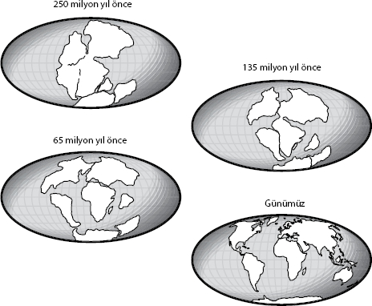

Haritacılar ve meteorologlar
dünyayı nasıl hareket ettirdiler?
Prof. Dr. Bill McGuire, Benfield Jeofizik Afetler Profesörü ve University
College London Benfield Afet Araştırma Merkezi Başkanı
Denizlerden ve uzaydan soyutlanmış yeryüzü, farklı büyüklüklerdeki deri parçalarından dikilen bir futbol topuna benzer. Yer kabuğuna ait bu parçalar, astenosfer adı verilen akışkan bir tabaka etrafında yüzer ve kıtaların kayması diye bilinen bir olayla yeryüzü kabuğunun çok altındaki sıcak ve iletken akımlarla sürüklenirler.
Bu devasa kaya kütlelerinden ikisi "dalma bölgesi" adı verilen yerde çarpıştığında, birisi diğerinin altına sokulur ve yerkabuğunun iyice aşağılarına doğru itilir. Bir aradaki iletken parçalar sıkıştığında muazzam bir basınç oluşur. Tıpkı lastik bandın çok gerildiğinde kopması gibi basınç aşırı arttığında kaya birdenbire çatlar ve yer sarsıntısına neden olur.
Bu yer sarsıntısının kaynağı –merkez üssü– sığ ve şehre yakınsa, çok katlı binaları devirebilir, evleri dümdüz edebilir, köprüleri yıkabilir, böylece kitlesel bir yıkıma yol açabilir. Ancak sarsıntı deniz tabanında gerçekleştiğinde de etkisi bir o kadar yıkıcı olabilir, üstelik merkez üssünden binlerce kilometre uzakta cereyan ettiğinde bile.
2004 yılında Noel hediyelerinin verildiği ilk günde boyu 30 metreyi bulan dev dalgalar Hint Okyanusu'nun çevresindeki kıyı şeritlerini yuttu. Nedeni, "mega basınçlı bir deprem"di. 9,3 şiddetindeki bu deprem şimdiye kadar kaydedilmiş üçüncü büyük depremdi ve yer kabuğunun bir değil, iki yerde çatlamasına yol açarak, 30 km³ suyu yerinden etti. Bu da kırk saatte dünyayı dolaşacak kadar güçlü bir dizi dalga yarattı.
Tektonik levhaların nasıl depreme yol açtığını anlamak ve kıtaların kayması kuramını geliştirmek yüzyıllar aldı. Değişime açık bir gezegende yaşadığımızı fark edişimiz ise on altıncı yüzyıla kadar gider.
Kralın Haritacısı
1596 yılında, Flaman haritacı ve coğrafyacı Abraham Ortelius ayakları altındaki yeryüzünün hareket edebildiği yönündeki radikal görüşü öne süren ilk kişi oldu. Dünyayı dolaşıp İspanya Kralı II. Philip'in isteği üzerine haritalar yaparken, Güney Amerika'nın doğu sahili ile Afrika'nın batı sahilinin, biraz yakın –yaklaşık 5000 km yakın– olsalardı testere dişleri gibi neredeyse birbirine uyacaklarını fark etti.
Ortelius bütün kıtaların kaydığını keşfetti: "Depremler ve sellerle… Avrupa ve Afrika'dan kopmuşlar. Eğer bir dünya haritasını alıp dikkatlice üç [kıtanın] kıyı şeridine bakarsanız, bu kopuşun izlerini görebilirsiniz." Theatrum Orbis Terrarum adındaki ilk modern atlası hazırlayan kişi olarak Ortelius, böylesine radikal bir görüşü öne sürebilecek kadar donanımlıydı. Ne yazık ki birkaç yüzyıl erken gelmişti dünyaya.
1912 yılında Alman meteorolog Alfred Wegener kıtaların kaymasının önemini kavrayana kadar, kıtaların kayması fikri bilimin ilgisizliğiyle unutulmaya yüz tuttu. Eğer Ortelius haklıysa, Afrika ve Güney Amerika eskiden birleşik ise, o zaman bütün kıtalar bir zamanlar devasa bir kara kütlesi olabilirdi. Wegener bu kara kütlesine Urkontinent adını verdi.
"Wegener'in kıtaların kayması fikri dünyayı parçalayan değil, birleştiren bir fikirdi: Gezegenimizin nasıl faaliyet gösterdiğini açıklayacak bir model geliştirme amacını taşıyordu," diyor McGuire.
Aslında Wegener bu fikri öne atan tek kişi değildi. 1889'da İtalyan jeolog Roberto Mantovani bir zamanlar büyük bir süper kıtanın var olduğunu öne sürmüştü. Fakat bir adım daha atıp Greenough Club'da kıtaların kayması kavramını sunan kişi Wegener oldu. Ne yazık ki Wegener jeolog değildi ve kıtaların kaymasının tam olarak nasıl gerçekleştiğini açıklayan sağlam bir kurama sahip olmaması yüzünden kuşkuyla karşılandı.
"Wegener'in konuşmasının ardından bir oylama yapıldı ve görüşü doğruca reddedildi," diyor McGuire. "Fakat aradan bir yüzyıl bile geçmediği halde, aynı konferans odası şimdi yerbilimi öğrencilerine ders vermek için kullanılıyor. Ama ne yazık ki Wegener ismi çoğu kimse için bir anlam ifade etmiyor."
Yalnız Bir Ölüm
Wegener, kıtaların kayması kuramını Grönland'e yaptığı çok sayıda keşif gezisi sırasında geliştirdi. Bu gezilerden biri onun sonu olacaktı. 1930 yılının kış mevsiminde kar, uygarlığa giden yolun izlerini örterek dönüş yolculuğunu riske sokmuştu. Açlık, bitkinlik ve eksi altmış derece soğuk Wegener'in grubunun aleyhine işliyordu. Gruptan Fritz Loewe'nin ayak parmakları dondu. Ama sırada daha kötüsü de vardı. Yiyecek kıtlığı başlayınca grup bölünme kararı aldı. Böylece Wegener ile meslektaşı Rasmus Villumsen sonraki kamp yerine doğru yola koyuldu.
Ne yazık ki oraya asla ulaşamadılar. Altı ay sonra Wegener'in cesedi Villumsen tarafından bulunarak gömüldü, ama Villumsen'i bir daha gören olmadı. Ne gariptir ki Wegener'in son mola yeri kıtaların kayması nedeniyle şimdi anavatanından sadece iki metre ötededir. Ne yazık ki günün birinde kuramının jeoloji kitaplarının başlıca maddesi olacağını ve modern jeolojinin temelinde yatan tektonik parçaların modelinin atası sayılacağını göremeden öldü.
